旧式AKGヘッドフォンのメンテナンス
先日、AKGのK240(初代モデル）のメンテナンスをしましたので、そのことについて書きます。
（分解・整備は各人の責任で行ってください。結果として破損しても当方は責任を負いません。）
�@マニュアルの入手
AKGの本社サイトは過去の製品についての資料が豊富に納められています。1960年代以前の製品についても収録されており、日本のメーカーにも見習ってほしいと思います。
http://www.akg.com/site//powerslave,id,15,nodeid,15,_language,DE.html (＊）
その中に主要な製品についてはPDFファイルでメンテナンス用のマニュアルも納められており、必要なファイルをダウンロードします。
今回はK240Monitorにマニュアルが収納されていました。
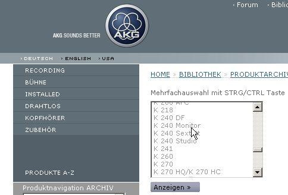
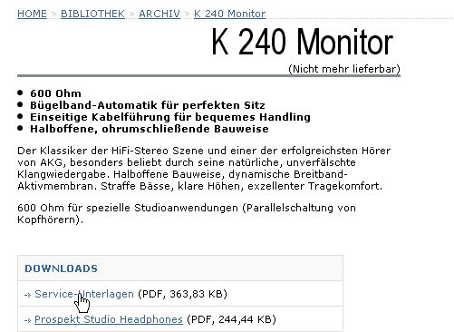
＊上記は、文書記載の2009年頃のサイトの状況での、話です。現在（2015年3月時点）ではサイト構造が変わっています。「Support」の「Product Archive」でヘッドフォンの型番で検索すれば、探せるようです。
�Aマニュアルを読む
ダウンロードしたマニュアルを開きます。こんな感じのファイルです。
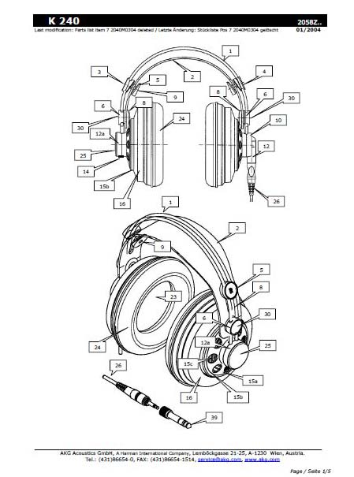
このマニュアルはK240系統共通のもののようです。
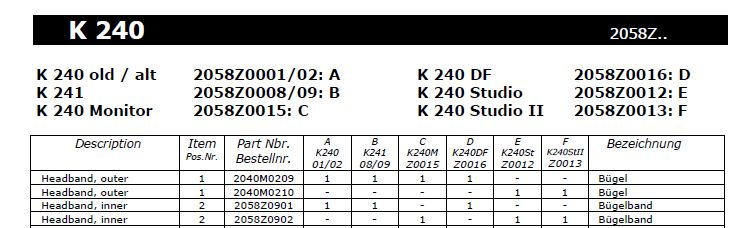
メンテナンスに必要な部品を探します。
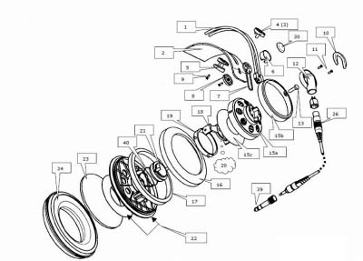
今回のメンテナンスは硬くなったイヤパッドとヘットバンドの長さ調節用のゴムひもの交換です。図解の「7」番と「24」の部品が必要となります。
次に該当の部品について、パーツリストを見ます。今回のメンテ対象はK240(初代モデル）なのでリストの「A=左端」の列となります。
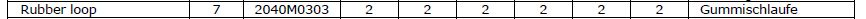
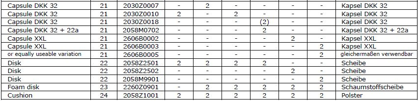
ゴムひも＝ラバーループとイヤパッド＝クッションは全機種共通のようです。また他の機種では標準装備のイヤパッド内のスポンジフィルターが該当機種では不要なことがわかります。
�Bサービス担当部門へ問い合わせ・注文
最近はイヤパッドを扱う店は増えましたが、内部の部品についてはカナル型イヤホンのフィルターなどを除けば、あまり見かけません。お店を通じて入手可能か国内のサービス対応部署へ問い合わせましょう。該当機種名、部品名、部品番号を記載して問い合わせます。なおゴールデンウイークやお盆、年末などは返答に時間がかかる場合があります。今回は間にお盆休みが入った為、回答に1週間かかりました。
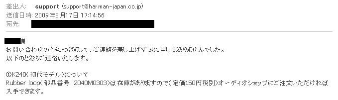
このメールをプリントアウトして持って行けば、オーディオ店でスムーズに注文できます。なお部品の取り寄せは店の担当者が代理店やサービス担当機関に問い合わせの電話を入れることが多いので、可能なら問合先が対応可能な平日の日中に注文したほうがいいでしょう。
今回はヨドバシカメラ秋葉原店で注文しました。注文したのが8/21、入荷の連絡があったのは8/27でした。
�C部品交換
取り寄せた部品です。
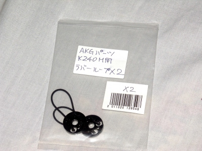
AKGの「Kシリーズ」以前の機種ではブランド名とモデル名を記入したプレートの下にネジが隠されています。
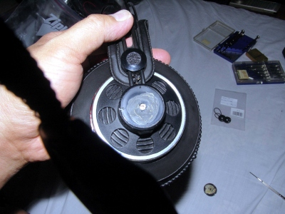
カバーをはずします。
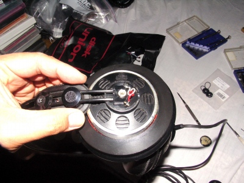
ヘットバンドを固定するやや太いネジが現れます。このネジに引っかけるようにしてラバーループを交換します。基本的にプラスとマイナスの精密ドライバーと接着剤があれば誰でも交換できます。ただしカバー内部にはコードが入っていますので、断線しないように丁寧に扱いましょう。
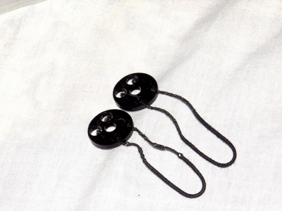
交換したラバーループ。片側のヘットバンド側が伸びて、切れる寸前でした。なおゴム糸の固定法が特殊で再利用は難しそうです。
なお「Kシリーズ」(K501など）はラバーループの固定法がやや複雑なので、専用のマニュアルを入手し、検討したほうがいいと思います。
(2010/4/11追加 最近（2009年12月）、K501のラバー・ループの交換を行い、それをブログに掲載されている方がいらっしゃいました。そのブログ「Min2 House」の管理人の方の許可をいただき、リンクさせていただきました。→こちらのページです。
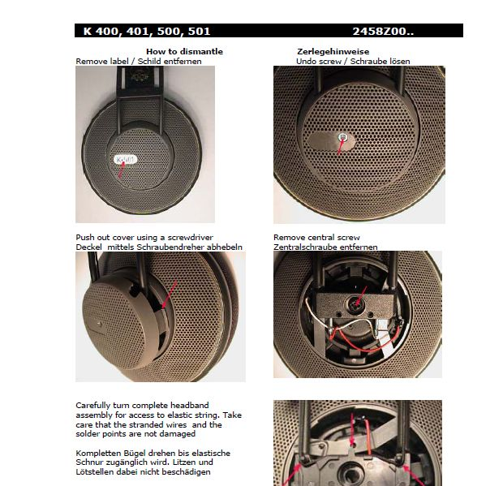
（K400/401/500/501用マニュアルより）
今回のラバーループの交換に必要だった部品代は、消費税込みで314円（消費税抜きで１個150円）でした。また以前K500のメンテの際に取り寄せたK400/401/500/501共通のラバーループは一個消費税抜きで350円でした。ラバーループの交換をメーカーサービスで頼むと機種によってばらつきがあるようですが数千円から1万円円かかると聞いたことがあります。
AKGのヘッドバンド自動調整機構は、同社のヘットホンの弱点とされます。耐久性を不安視する意見も見られますが、自身の経験では保管に最低限の気配り（直射日光にあてない、不使用時は乾燥剤同梱で保管）をすれば、２，３年でだめになるものではありません。部品も共通化（*）していますので、安心して使える機種なのではないでしょうか。
＊部品の共通化 ラバーループ（部品番号 2040M0303）は他にK141系統（K141Studio�Uを除く）、K271でも共通です。また、形状からいってK270/280/290でも利用可能と思われます。なお現行製品群では（部品番号 2040M3030）となっていますが、この部品との互換性は不明です。